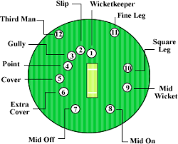

Let me explain some of the basic rules of Cricket
There are 2 innings in the game, in the 1st inning one team bowls and the other teams bats. In the second
inning the team that bowled first trys to defend the total amount of runs they made while batting in the first
inning.
Each team in cricket has 11 players, with some being batsmen, some being bowlers and 1 or 2 being allrounders,
who are decent at bowling and batting.
In cricket, 1 pitcher bowls 6 deliveries which constitutes an over. After this the next bowler comes and bowls 1
over. No bowler can bowl consecutive overs so
there must be atleast a 1 over gap before a bowler can bowl again. In a 50 over game, a bowler can bowl a
maximum of 10 overs so
if the captain decided to use only 5 bowlers, each one would have to bowl 10 overs or 60 delivieries.
In cricket, 2 batsmen bat at the same time. By hitting the ball into the playing field and then running down to
the other end of the wicket and back, a batter accumulates runs. The key
principle in cricket is that if you are out once, you wont bat again in the innings. If the bowling team manages
to get the other teams 10 batters out before 50 overs are done, then the team is all out and doesnt complete the
alloted 50 overs. In this case however many runs the team scored before getting all out is the score they must
defend when they bowl in the next innings.
There are a couple of ways to get out in cricket. In cricket behind you there are 3 thin wooden sticks called
the stumps. If the bowler bowls and you miss and the ball hits the stumps, you are out. This is known as
"bowled". Another way to be out is if you hit the ball directly in the air without it bouncing, and it is caught
by any one of the fielders, you are out.
Also, if you miss the ball but the ball hits your leg, then you can appeal to the umpire for leg before wicket.
In this case, if the umpire adjudges that the ball would have hit the wicket had it not hit your leg, then you
are out.
This is known as lbw (leg before wicket).
Image Showcasing Basic Rules of Cricket

Image Showcasing cricket ground plus positions where fielders are located for fielding
